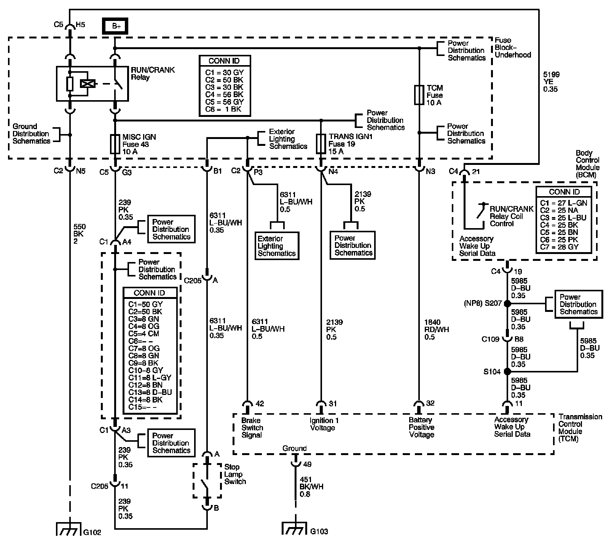

4L60-E / 4L65-E / 4L70-E Automatic Transmission
DTC P0724

Circuit Description
The stop lamp switch is used to sense the action of the driver application of the brake pedal. The stop lamp switch is a normally open switch that, when applied, provides a B+ analog voltage to the transmission control module (TCM).
When the TCM detects a closed stop lamp switch circuit, B+ voltage, during a calibrated number of accelerations, then DTC P0724 sets. DTC P0724 is a type C DTC.
DTC Descriptor
This diagnostic procedure supports the following DTC:
DTC P0724 Brake Switch Circuit High Voltage
Conditions for Running the DTC
^ No OSS DTCs P0722 or P0723.
^ No Brake Switch DTC P0719.
^ The vehicle speed is less than 40 km/h (25 mph) for 6 seconds, then greater than 40 km/h (25 mph) for 7 seconds, then less than 8 km/h (5 mph).
Conditions for Setting the DTC
DTC P0724 sets when the TCM detects the brake switch circuit is open during accelerations.
Action Taken When the DTC Sets
^ The TCM does not request the engine control module (ECM) to illuminate the malfunction indicator lamp (MIL).
^ The TCM records the operating conditions when the Conditions for Setting the DTC are met. The TCM records this information as a Failure Record.
^ The TCM stores DTC P0724 in TCM history.
Conditions for Clearing the DTC
^ The TCM clears the DTC from TCM history if the vehicle completes 40 warm-up cycles without a non-emission related diagnostic fault occurring.
^ A scan tool can clear the DTC.
Diagnostic Aids
^ Inspect the brake switch for proper mounting and operation.
^ Inspect for ABS DTCs. A faulty ABS condition may contribute to setting DTC P0724.
Test Description
The numbers below refer to the step numbers on the diagnostic table.
2. This step isolates the brake switch as a source for setting the DTC.